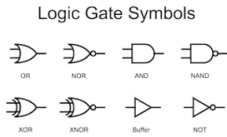
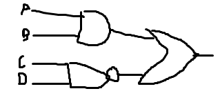

Computer Science A level
Logic gates
Logic gates are ways to represent logic in a system.
Typically we learn AND NOT OR.
AND needs both inputs to be true. 1+1=1
NOT reverses the input. 1=0 and 0=1
OR needs at least one input to be true. 1+0=1 1+1=1
XOR needs at one input to be true. 1+0=1 1+1=0
NAND or NOR is NOT AND and NOT OR. This just reverses the normal logic gate.
Example:
1)Express the system with logic gates where buttons A and B must be true OR NOT C AND D
Firstly we write out inputs: A,B,C,D
We know that A AND B OR NOT C and D
We draw A and B as an AND logic gate next to C and D as a NAND gate.
This will be connected by an OR gate, because the question says one of the gates must be true.
This is what it should look like (sorry for bad drawing)
Boolean algebra
Boolean algebra is a way of writing logic as an equation.
Like algebra, we represent the inputs and outputs as letters. We then use symbols to represent gates.
NOT is ¬
AND is '^'. It can also be represented by being multiplied by the other digit
OR is v
XOR is ⊕
In exams you will be asked to simplify logic expressions. There are methods like DeMorgan's laws and Karnough maps
DeMorgan's laws are tricky to remember, but uses basic mathematical principles.